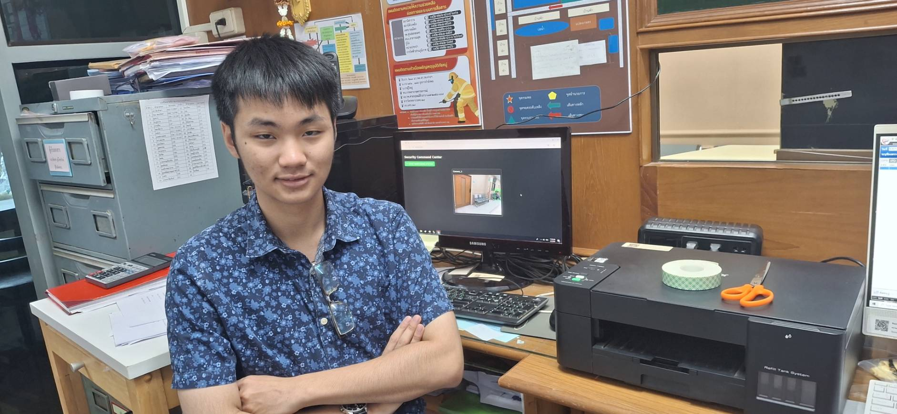
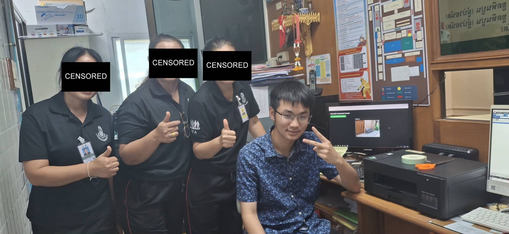
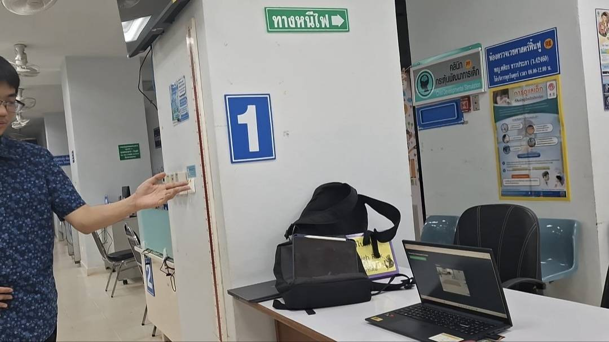
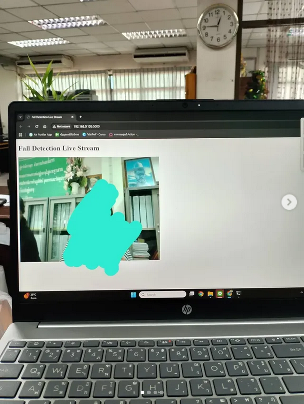

Operational Readiness
Deployment Registry
A track record of manual hardware installations and high-stakes environmental performance.
Active Site
Fort Krit Siwara Hospital

Hardware Calibration
Ward Integration- Manual calibration of fall-detection camera for fulltime clinical monitoring and staff training for everyday operations.
- Optimization for low-end department PC to ensure reliable uptime in ward environments.
- Ward average monthly patient number: 400 people
Active Site
Sakon Nakhon hospital
Staff training

device demonstration- Manual calibration of fall-detection camera for fulltime clinical monitoring and staff training for everyday operations.
- Optimization for 2018 ASUS laptop to ensure reliable uptime in ward environments.
- Ward average monthly patient number: 800 people
Demo Environment
Ban Bangkhae Home

Live Demonstration- Initial proof-of-concept remote deployment(cooperation with local staffs) in a local elderly care home.
- Deployment in an area with 30 residents
- Community engagement and feedback collection
Execution Timeline
Deployment Milestones
April 2026
Mass deployment and public launch Live
After winning silver medal at SWU hackatron the system is deploy in 2 hospitals while also receiving more than 120 download after 1 month of public availability.
October 2025
Test deployment and external validation
Demo deployment in Ban Bangkahe 2 and validated at Hackatron competition hosted by SWU
March 2025
Finish v.1 of the system
Finish the android app, web-hook server and the fall detector
December 2024
Demo and Testing phase
Established core objectives for low-complexity, affordable fall detection designed for low-end computer hardware.